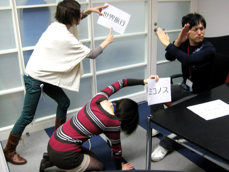

『Wii版プレゼント企画 当選者さま発表★』
2009年01月07日
2008年1月6日。
セガ会議室「テイルスルーム」にて
こちらの企画の当選者を決める話し合いが行われていました。
皆さまから頂いた
「ハミだしブログでチャレンジする企画のアイデア」を前に
悩む一同……
一同 ： う～～～ん……
『SWA』ディレクター橋本さん(以下、橋本D) ： 結構、いっぱい集まったねぇ。
そうですよね♪
選ぶのが大変なくらい！
ありがたや、ありがたや。
橋本D ： この、PN しん さんの
「ソニックのように早く走る練習」っていうのは面白いんじゃないかな。
橋本さん……ソニックって音速で走るんですけど……
私たちに、飛行機と駆けっこをしろと申しますか。
橋本D ： じゃあ……PN H.K .さんの、
「ソニックワールドアドベンチャーを順番にプレイ」っていうのは？
あ、それなら楽しそう♪
橋本D ： 「そして、1ミスする度に
わさび入りシュークリームを食べなければならない。」
ひぃ！！
なんでそんなのばっかり！
橋本D ： う～ん、迷うなあ……
あ、橋本さん！
これなんかどうですか？
橋本D ： どれどれ？
PN ポン酢 さんのリクエスト
「SWAで登場するステージのモチーフとなった場所に実際に行ってみる」
『SWA』で登場するステージのモチーフである
あんな観光地やこんな世界名所に2人で行って
バカンｓ……じゃない、取材をしてくる企画です！！
おおっ！！ これは素晴らしい！！
橋本D ： ……君たちが自腹で？
何言ってるんですか！
これはユーザーさまからのリクエストです！
つまり仕事なので、旅費は会社持ちで！！
『SWA』の世界を
1ヶ月ほどかけてバッチリじっくり取材してきます。
お金ください。
橋本D ： そんなのダメに決まってるだろ！！
え～！！

観光地～！ ミコノス島～！
世界旅行～！！
橋本D ： ダメ―――！！
……等々、
大騒ぎの末に、
以下3つの企画を採用させて頂くことになりました！
PN サンタクララ さま
[ リクエスト ]
マツバラとヨシノがセガに入社したきっかけや
ソニックに対する思いを語る！
PN merao さま
[ リクエスト ]
マツバラとヨシノの『SWA』登場キャラクターうろ覚えイラスト対決！PN くさもち一号 さま
[ リクエスト ]
橋本Dの席から面白いものを借りてきて当ブログ上で紹介！
上記3名さまには、
後日メールにてご連絡を差し上げます。
皆さま、たくさんの面白いリクエストを
どうもありがとうございました～♪
（尚、内容の類似した企画をご応募頂いている場合は
その中のいずれか「お1人様」を抽選で選出させて頂いております。
悪しからずご了承下さい。）
日時: 2009年01月07日 14:00 | パーマリンク


 ソニックを愛する、元気な『SWA』2年目プランナー。
ソニックを愛する、元気な『SWA』2年目プランナー。 マイペースな『SWA』2年目プランナー。
マイペースな『SWA』2年目プランナー。
 ご意見・ご要望はこちら
ご意見・ご要望はこちら RSS
RSS